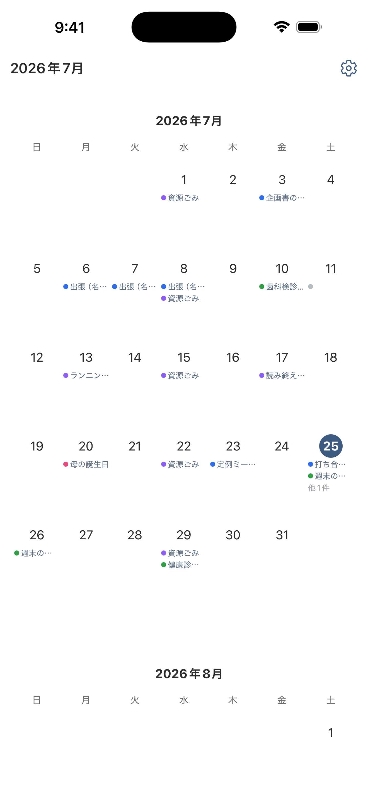
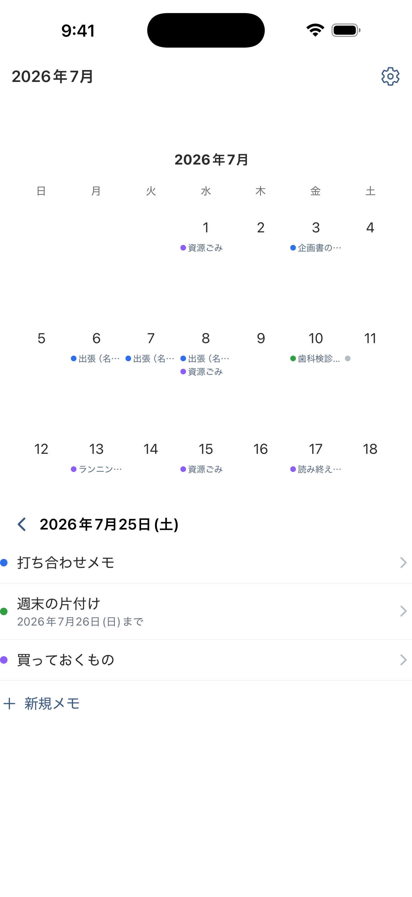
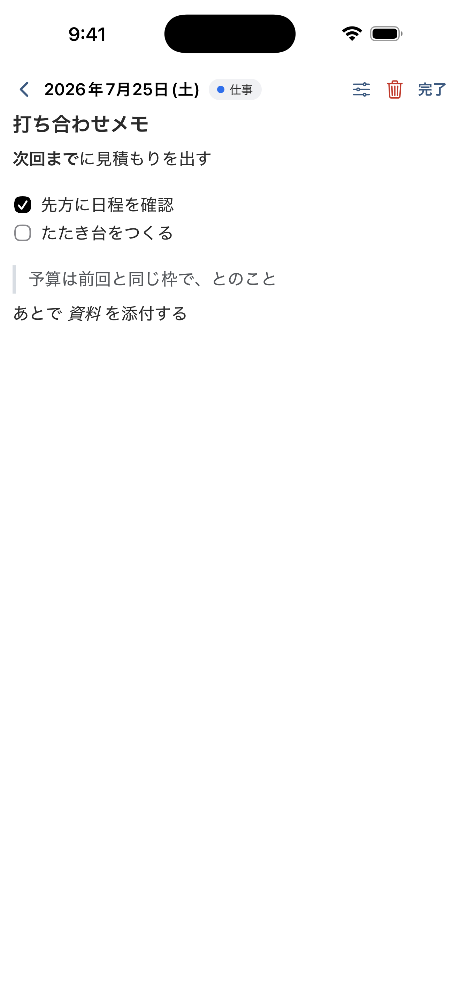
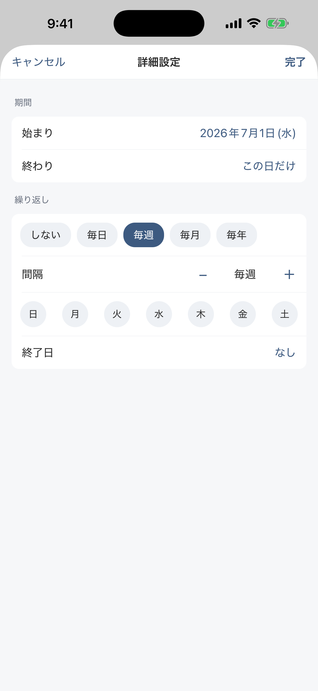
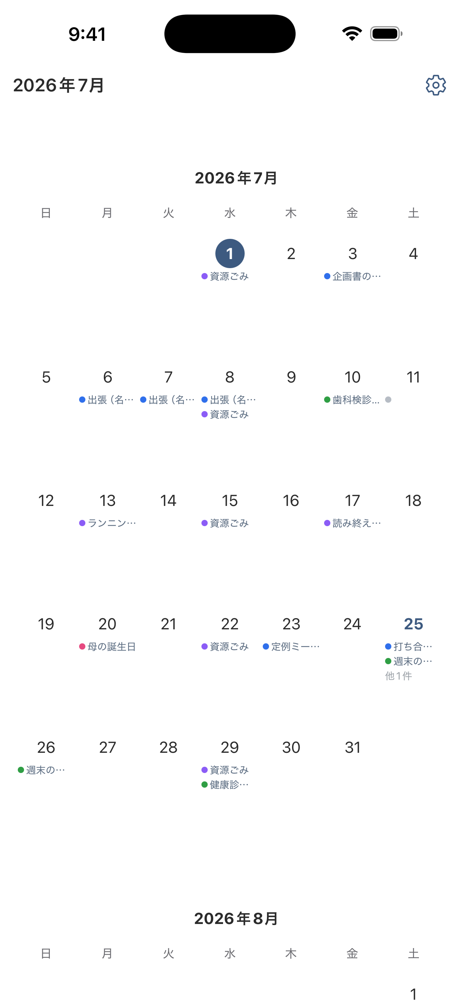

思いついたら、
その日にすぐ。
日付をタップして、そのまま書くだけ。保存ボタンも、フォルダ分けも、 タイトルを付ける手間もありません。
iPhone 向け・近日公開日付をタップして、そのまま書くだけ。保存ボタンも、フォルダ分けも、 タイトルを付ける手間もありません。
iPhone 向け・近日公開




その日に何を書いたかが、カレンダーにそのまま並びます。縦にスクロールすれば前後の月へ続きます。
その日のメモが下から出ます。カレンダーは見えたままなので、別の日にもすぐ移れます。
見出し・チェックリスト・引用・リンク。買い物リストにも、打ち合わせのメモにも、日記にも。
何日かにまたがるメモも、毎日・毎週・毎月・毎年の繰り返しも作れます。日付の設定は奥にしまってあるので、ふだんは目に入りません。
カテゴリを付ければ、色でひと目で見分けられます。バックアップからは書式もカテゴリもそのまま戻せます。
覚えることを増やさないために、操作を絞っています。
その日のメモ一覧が開きます。何件あっても同じ場所から始まります。
入力が止まると自動で保存されます。保存ボタンを探す必要はありません。
期間や繰り返しは詳細設定にまとめてあります。ふだんは意識せず、書くことだけに集中できます。
カレンダーに書けるアプリは、たいてい一行のタイトルしか置けません。このアプリなら リッチテキストで書けます。見出しで区切り、チェックリストで持ち物を 並べ、引用で相手の言葉をそのまま残す。買い物リストも、打ち合わせのメモも、日記も、 同じ場所に書けます。
予定管理アプリほど大げさではなく、メモ帳より日付に強い。ちょうどその間を狙っています。
日付をタップするとその日のメモが開きます。入力が止まると自動で保存されるので、 保存ボタンはありません。
見出し・太字・箇条書き・チェックリスト・引用・リンク。買い物リストにも、 打ち合わせのメモにも。
1日に何件でも置けます。何日かにまたがるメモや、毎日・毎週・毎月・毎年の 繰り返しも作れます。毎週なら曜日も選べます。
カテゴリを付けると、カレンダーに色の点が並びます。カテゴリは自由に追加・ 改名・色変更ができます。
機種変更や再インストールに備えてバックアップを書き出せます。書式もカテゴリも そのまま戻せます。
.ics 形式で書き出し・取り込みができます。他のカレンダーアプリから乗り換えるときにも、 他のアプリへ移るときにも。
「送らない」と書いてあるアプリは多いですが、このアプリは そもそも通信する仕組みを持っていません。
通信しないので、端末をまたいだ同期はできません。 機種変更のときは、設定画面からバックアップを書き出して、新しい端末で読み込んでください。 複数の端末で同じメモを見たい方には向きません。